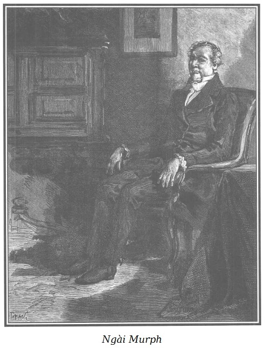

Rodolphe đi ra sân trại và gặp người có thân hình cao lớn tối hôm trước, người bán than đến báo cho ông biết sự xuất hiện của Tom và Sarah.

.Ông Murph này, trạc độ năm mươi tuổi, mái tóc vàng sẫm điểm bạc loăn xoăn hai bên chỏm đầu hói gần hết. Mặt to, ửng đỏ, cạo nhẵn trừ chòm râu ngắn không quá mang tai, hung hung, vòng xuống hai má bầu bầu. Mặc dù đã có tuổi và hơi phì nộn, Murph rất nhanh nhẹn, khỏe mạnh. Nét mặt có vẻ phớt đời nhưng rất dễ mến và cương nghị. Ông thắt ca vát trắng, mặc gi-lê và áo choàng đen đuôi rộng, quần xanh xám cùng màu với đôi ghệt khuy xà cừ chưa cài hết, để lộ đôi bít tất đỏ bằng len thô. Cách ăn mặc và dáng điệu hùng dũng của Murph là điển hình cho tầng lớp mà người Anh gọi là quý tộc trại chủ. Nhưng thực ra Murph là một quý tộc Anh chính cống chứ không phải trại chủ.
Rodolphe đi vào sân, Murph bỏ vào túi chiếc xe ngựa mui trần hai khẩu súng lục vừa lau chùi cẩn thận.
– Đứa nào khiến ông phải mang súng như thế? – Rodolphe hỏi.
– Chuyện đó chỉ có quan hệ đối với tôi, thưa Đức ông, – Murph nói và bước xuống bậc thềm – ngài cứ làm việc của ngài, tôi làm việc của tôi.
– Ông hẹn ngựa đến vào giờ nào?
– Theo lệnh ngài, vào lúc nửa đêm.
– Ông đến sáng nay ư?
– Lúc tám giờ, bà Georges đã có đủ thời gian rỗi để chuẩn bị mọi việc.
– Ông có vẻ bực mình, ông không hài lòng về tôi ư?
– Không nhiều lắm, thưa Đức ông… hơi nhiều, một ngày nào đấy… nguy hiểm đấy… thưa, đấy là sinh mệnh của ngài chứ có phải chơi đâu!
– Nói như ông thì dễ thôi. Nếu tôi để cho ông làm thì chỉ có nguy hiểm cho ông, và…
– Vậy thì, nếu khi ngại làm việc – nghĩa là không phải liều đến tính mạng thì làm gì có điều xấu nhất xảy ra, thưa Đức ông?
– Thế nếu là niềm vui sướng lớn nhất thì sao, ông bạn Murph?
Murph nhún vai.
– Ngài, ngài vào cả một cái quán như thế!
– Chao ôi! Bọn người Anh các ông là như thế đấy. Với tất cả tính thận trọng quý phái của các ông, cứ tin rằng các đại lãnh chúa phải có cốt cách tinh hoa hơn các ông kia, ôi! Những con cừu tội nghiệp lại tự hào về bọn đồ tể!
– Nếu ngài là người Anh, thưa Đức ông, ngài sẽ hiểu điều đó… Người ta tôn kính người biết tôn kính. Hơn nữa, cho dù là người Thổ, người Trung Hoa hay người Mỹ đi nữa, tôi vẫn thấy ngài khinh suất như vậy là sai lầm quá. Tối qua, trong con phố ghê tởm đó của khu Nội Thành, khi cùng ngài tìm kiếm phát hiện tên Cánh Tay Đỏ nào đó, quân trời đánh thánh vật! Lúc đó nếu không sợ ngài nổi giận vì không vâng lời, thì tôi đã chẳng tự ngăn mình không vào giúp ngài khi ngài vật lộn với tên côn đồ ở cổng ngõ cái nhà tồi tàn ấy.
– Thế có nghĩa là, ông Murph ơi, ông không tin vào sức tôi, vào lòng can đảm của tôi?
– Đáng tiếc là ngài đã hàng trăm lần khiến tôi có cớ để không phải lo ngại gì về sức mạnh cũng như lòng can đảm của ngài. Nhờ ơn Chúa, Crabb ở Ramsgate đã dạy ngài học đấm bốc, Lacour ở Paris đã dạy ngài đấu côn, đấu cước, và do ngài tò mò, đã dạy ngài cả tiếng lóng, Bertrand nổi tiếng đã dạy ngài đấu kiếm, và khi đấu thử với các võ sư, ngài thường giành được thế thượng phong. Ngài bắn được chim nhạn đang bay bằng một phát súng lục, ngài có những cơ bắp rắn như thép tuy ngài dong dỏng mảnh dẻ. Ngài sẽ thắng tôi dễ dàng như con ngựa đua thắng con ngựa của người làm rượu bia, đó là sự thật.
Rodolphe vui vẻ nghe kể lể những đức tính đấu sĩ của mình, ông mỉm cười nói lại:
– Vậy thì ông sợ nỗi gì?
– Tôi vẫn giữ ý kiến của tôi, thưa Đức ông, thật không phải tí nào khi ngài đưa cổ ra cho một tên đểu cáng mới gặp lần đầu nắm lấy. Đó là tôi chưa kể đến những bứt rứt khó chịu do than bụi lem luốc trên khuôn mặt khả kính của một người quý tộc, trông cứ như quỷ sứ ấy. Tuy nhiên, mặc dù tóc tôi đã hoa râm, người tôi… hơi phì nộn và nặng nề, tôi vẫn có thể cải trang thành người leo dây nếu việc đó có thể phục vụ ngài. Nhưng tôi vẫn giữ ý kiến của tôi.
– Chà! Tôi biết lắm, ông bạn già Murph ạ, khi một ý nghĩ đã khắc sâu trong óc ông, khi lòng tận tụy đã cắm rễ trong quả tim cương nghị và dũng cảm của ông thì đến ma quỷ cũng phải dùng răng và móng vuốt để rút những cái đó ra.
– Ngài quá khen tôi, thưa Đức ông, ngài trù tính một vài…
– Đừng ngại, ông bạn cứ nói.
– Việc điên rồ, thưa Đức ông.
– Ông bạn Murph tội nghiệp, ông chê trách tôi không đúng lúc rồi!
– Tại sao ạ?
– Tôi đang đắc chí và đang sung sướng nhất… Tôi đang ở đây.
– Nơi ngài đã làm một việc nghĩa hiệp.
– Đấy là nơi để tránh những bài thuyết giáo chán phè của ông! Đây là cung điện của tôi.
– Nếu như thế thì chỗ quái nào mà ngài muốn tôi gặp ngài cho được? Thưa Đức ông!
– Ông bạn Murph, ông lại muốn ngăn tôi làm vài chuyện rồ dại nào đó chứ gì?
– Thưa Đức ông, có những chuyện ngông cuồng tôi có thể bỏ qua được.
– Những hành động điên rồ về tiền nong.
– Vâng! Vì dù sao với gần hai triệu đồng lợi tức.
– Đôi khi con người ta cũng có lúc túng thiếu… ông bạn Murph của tôi ạ!
– Tôi biết thừa đi rồi, thưa Đức ông.
– Thế mà có những niềm vui mạnh mẽ, trong sáng cực kỳ mà chẳng tốn bao nhiêu! Chẳng có gì có thể so sánh với điều tôi vừa cảm nhận như vừa rồi khi cô bé tội nghiệp ấy thấy được sự an toàn ở đây và đã hôn tay tôi để bày tỏ lòng biết ơn. Chưa hết đâu. Niềm sung sướng của tôi còn lâu dài, mai, ngày kia, trong nhiều ngày nữa. Tôi có thể hình dung một cách thú vị những xúc cảm của cô bé tội nghiệp khi thức dậy trong nơi ẩn cư yên tĩnh này bên cạnh bà Georges phúc hậu, bà yêu cô bé thiết tha bởi vì những người đau khổ thường dễ gần nhau.
– Ồ! Đối với bà Georges, chưa bao giờ những việc thiện lại được đặt đúng chỗ hơn. Cao quý… can đảm. Người rất mực đạo đức, một thiên thần, tôi ít khi xúc động, vậy mà tôi đã xúc động trước nỗi khổ của bà Georges… Nhưng còn người mà ngài vừa cứu vớt… Thôi! Không nói chuyện đó nữa.
– Tại sao, Murph?
– Thưa Đức ông, ngài thấy hay thì ngài cứ làm.
– Tôi làm những gì chính đáng. – Rodolphe nói giọng bất bình.
– Những gì chính đáng, theo ngài?
– Những gì đứng trước Chúa và trước lương tâm tôi. – Rodolphe nói một cách nghiêm nghị.
– Thưa Đức ông, về việc này chúng ta chưa nhất trí với nhau. Tôi xin nhắc lại, chúng ta, thôi không nói đến nữa.
– Và tôi, tôi lệnh cho ông nói. – Rodolphe nói to một cách oai vệ.
– Tôi chưa bao giờ để Đức ông phải ra lệnh cho tôi im. Tôi hy vọng rằng ngài không ra lệnh cho tôi phải nói. – Murph đĩnh đạc trả lời.
– Ông Murph!!! – Rodolphe gắt lên giận dữ.
– Thưa Đức ông…
– Ông biết đấy, ông Murph, tôi không ưa lời nói ngập ngừng bỏ lửng.
– Tôi nhận là mình chưa nói hết sự việc. – Murph mạnh dạn nói.
– Ông nhớ cho, nếu tôi tự cho phép mình suồng sã với ông thì chỉ với điều kiện là ông phải tự tôn bằng lời nói thẳng. – Không thể tả hết bộ mặt cau có tột bậc của Rodolphe khi nói những lời sau cùng này.
– Thưa Đức ông, tôi đã năm mươi tuổi, tôi là quý tộc, Đức ông không nên nói với tôi như thế.
– Thôi! Hãy im đi!
– Thưa Đức ông!
– Ông im đi!
– Thưa Đức ông! Thật không xứng đáng khi buộc một người đôn hậu phải nhớ lại những công trạng đã làm.
– Công trạng của ông? Tôi đã chẳng đền đáp bằng đủ mọi cách sao?
Cần phải nói rằng Rodolphe không có ngụ ý gì trong những lời nặng nề nghiệt ngã hạ Murph xuống bậc tay sai nhưng không may là Murph lại suy diễn ra như vậy, ông đỏ mặt vì xấu hổ, hai tay ôm lấy cái trán hói, bất bình và đau xót; bỗng dưng bằng một phản ứng đột ngột nhìn lại Rodolphe cũng đang có nét mặt cau có, biến dạng đi bởi vẻ khinh thường mãnh liệt; Murph cố ngăn tiếng thở dài, nhìn con người ấy trìu mến, thương cảm và ngập ngừng xúc động, nói:
– Thưa Đức ông, ngài hãy tỉnh trí lại, ngài thật không biết điều.
Câu nói đó gây một phản ứng mạnh đối với Rodolphe. Mắt ông ánh lên một tia man rợ, đôi môi trắng bệch và tiến đến gần Murph với một cử chỉ đe dọa, ông thét lên:
– Ông dám nói như vậy sao?
Murph lùi lại và nói thật nhanh hầu như bất giác:
– Thưa Đức ông, thưa Đức ông, xin ngài nhớ lại ngày… ngày 13 tháng Giêng.
Câu nói đó gây ra một phản ứng thần diệu ở Rodolphe. Nét mặt đang co rúm lại vì giận dữ dịu hẳn đi. Ông nhìn chòng chọc vào Murph, dần cúi đầu xuống, rồi một lúc im lặng ông khe khẽ nói, giọng lạc hẳn:
– Chà! Ông ơi! Ông tệ thật. Tôi cứ tưởng rằng… và ngay cả ông, ông chẳng còn…
Rodolphe không thể nói hết, giọng lịm dần. Ông buông rơi mình xuống cái ghế đá, hai tay ôm đầu.
Murph ân hận:
– Thưa Đức ông, Đức ông kính mến của tôi, tha thứ cho Murph, người bạn già trung thành của ngài. Chỉ vì tôi quá bực và tôi sợ. Than ôi! Không phải cho tôi mà chính cho Đức ông, về những hậu quả của sự nổi giận mà tôi đã lỡ nói ra như thế. Tôi nói ra không vì nóng nảy, không vì trách móc, tôi đã nói và không hề muốn và ái ngại cho Đức ông. Thưa Đức ông, tôi có sai lầm là đã mếch lòng… Lạy Chúa! Còn ai có thể biết rõ tính cách Đức ông nếu không phải là tôi, người chưa bao giờ xa Đức ông từ thời Đức ông còn niên thiếu. Người bỏ qua chuyện tôi đã làm Đức ông phải nhớ lại cái ngày bi thảm đó… Chao ôi! Đức ông đã ăn năn tự chuộc tội biết mấy rồi…
Rodolphe ngẩng đầu lên, mặt tái hẳn, ông dịu dàng và buồn bã nói với Murph:
– Thôi! Thôi! Ông bạn già của tôi, cảm ơn ông, chỉ một câu mà ông đã làm tắt ngấm cơn khùng nguy hại của tôi. Tôi không xin lỗi ông vì những lời nặng nề của tôi. Ông đã thừa hiểu từ tim đến miệng còn xa như người ta thường nói. Tôi điên rồi, thôi đừng nói chuyện đó nữa.
– Khổ thật, rồi đây Đức ông còn buồn lâu… Tôi cũng rất khổ tâm! Tôi không muốn gì hơn là Đức ông quên đi những nỗi buồn, thế mà tôi lại làm Đức ông lâm vào tình trạng đó vì tính dễ tự ái ngu dại của mình. Chết thật! Đã là người trung thực với hai thứ tóc trên đầu, tại sao lại không kiên nhẫn chịu đựng được những điều chê trách không đáng phải hứng chịu.
Murph nói với niềm hứng khởi khôi hài trái ngược với vẻ điềm tĩnh của ông.
– Chẳng là người ta phải bỏ cả ngày để khen tôi, nói với tôi: “Ông là kiểu mẫu cho những bề tôi thủ túc, ông Murph ạ! Không có ai tận tụy được như ông, ông là người đáng phục. Ừ nhỉ! Ghê thật! Ồ! Ông Murph đẹp quá! Ông Murph trung hậu quá! Nào con vẹt già, hãy gãi đầu hoa râm của mày đi!”
Nhớ lại những lời trìu mến mà Rodolphe đã nói với mình lúc bắt đầu câu chuyện, ông lại nói to, một cách rất tuồng:
– Người đã gọi tôi là “bạn tốt của ta”, “bạn già của ta”, là “ông bạn Murph trung thành”, thế mà tôi đã xử sự cục cằn chỉ vì một lời dí dỏm không cố ý. Ở tuổi tôi… Trời ơi! Đến phải nhổ hết tóc! – Và con người quý phái đáng tôn kính đó đưa hai tay ôm lấy thái dương.
Những lời nói và cử chỉ đó ở ông là dấu hiệu của sự thất vọng đến tột đỉnh. Không may hay đáng mừng đối với Murph, đầu ông ta đã hói gần hết, do vậy cách biểu lộ vò đầu bứt tóc của ông trở thành vô hại khiến ông ân hận một khi hành động đi theo lời nói; cong những ngón tay cào lên cái đầu bóng loáng nhẵn thín như đá hoa, nhà quý tộc bối rối và hổ thẹn vì tính tự phụ, ông nhận thấy mình quá khoác lác và huênh hoang.
Chúng tôi phải nói ngay để cho ông Murph khỏi bị quy kết là khoác lác bởi vì trước đây ông ta có bộ tóc rậm nhất, vàng nhất, từng che phủ cái đầu của người quý tộc xứ Yorkshire.
Thông thường thì sự thất vọng của ông Murph về bộ tóc của mình khiến Rodolphe tức cười. Nhưng những ý nghĩ của ông lúc này thì lại trịnh trọng và đau xót, mà không muốn để cho ông Murph cứ ân hận mãi nên Rodolphe mỉm cười và dịu dàng nói:
– Nghe tôi nói đây, ông Murph đáng quý của tôi, hình như ông tiếc lời khen về những gì tôi đã làm cho bà Georges.
– Thưa Đức ông…
– Và ngạc nhiên vì sự quan tâm của tôi đối với cô bé tội nghiệp bị sa ngã.
– Thưa Đức ông, xin tha thứ cho tôi, tôi sai, tôi sai.
– Không đâu! Tôi hiểu điều đó, những cái bề ngoài có thể làm ông lầm lẫn. Chỉ có điều là ông đã biết rõ cuộc đời tôi… Ông đã giúp đỡ tôi trung thành, dũng cảm biết mấy trong công việc tôi đang thực hiện… Nghĩa vụ của tôi… ông thích nói như thế này hơn, lòng biết ơn của tôi buộc tôi phải thuyết phục cho ông hiểu rằng tôi không hành động một cách khinh suất.
– Tôi biết như thế, thưa Đức ông.
– Ông biết những ý nghĩ của tôi về những việc thiện mà con người có thể làm được: Cứu giúp những người bất hạnh đáng kính đang đau khổ là tốt. Quan tâm đến những người đang đấu tranh hết mình và kiên quyết đến trợ giúp họ mà đôi khi họ không hay… Phòng ngừa kịp thời sự khốn khó hay sự cám dỗ dẫn đến tội ác lại càng tốt hơn. Khôi phục lại nhân phẩm cho họ ngay trước mắt họ, cải tạo thành người tốt những người còn giữ được vẻ thuần khiết của những tình cảm cao thượng nào đấy đang bị sự khinh bỉ làm ô nhục, bị đói nghèo gặm nhấm, bị mọi mua chuộc, tha hóa bao vây. Và vì thế mà mình tự chấp nhận sự tiếp xúc với cái đói nghèo ấy, cái đồi bại ấy, với bùn nhơ… lại càng tốt hơn nữa… Truy kích với lòng căm giận sôi sục, lòng thù hận không nguôi với sự trụy lạc, sự ô nhục của những tội ác, dù nó lết dưới bùn hay ngự trên nhung lụa. Đấy là công lý… nhưng cứu giúp mù quáng một trường hợp khốn khó tuy xứng đáng cũng làm giảm giá của bố thí và lòng thương xót, làm biến chất những ý nghĩ thanh khiết và sùng tín từng an ủi tâm hồn đang giằng xé trong tôi. Phung phí những tư tưởng ấy cho những kẻ mất phẩm giá, ô nhục, điều đó sẽ rất đáng sợ, là sự báng bổ, nghịch đạo, là phạm thánh, sẽ làm người ta nghi ngờ Chúa. Làm việc thiện thì phải gây được lòng tin ở Chúa.
– Thưa Đức ông! Tôi không muốn nói là ngài tri ân không đúng chỗ.
– Lại nữa, ông bạn già của tôi, bà Georges và cô bé tội nghiệp mà tôi giao phó cho bà chính là hai cực trái ngược cùng rơi vào một vực thẳm chung: Sự bất hạnh. Một người sung sướng, giàu có, được yêu chiều, được quý trọng, có đầy đủ đức hạnh đã thấy đời mình nhục nhã, tan nát, hủy hoại vì cha mẹ mù quáng gả cho một kẻ gian ác khéo che đậy… Tôi hài lòng mà nói như vậy vì không có tôi thì bà Georges, người đàn bà bất hạnh đó sẽ chết vì nghèo đói, thiếu thốn; vì sự xấu hổ ngăn không cho bà ta thổ lộ với ai.
– Chao ôi! Thưa Đức ông, khi chúng ta bước vào túp lều tồi tàn đó, sự nghèo khổ mới kinh khủng làm sao, thật thảm hại! Thật thảm hại! Và sau trận ốm kéo dài có thể nói bà ta được sống lại, trong căn nhà yên tĩnh này, thật kinh ngạc biết bao! Hàm ơn biết bao! Ngài nói đúng. Thưa Đức ông, thấy những người bất hạnh như thế được cứu vớt, điều đó khiến người ta càng tin ở Chúa. Cứu giúp họ là làm sáng danh Chúa.
– Tôi nhận ra rằng không có gì thiêng liêng bằng đức tính trong sáng và chín chắn, không có mấy ai đáng kính trọng hơn người đàn bà như bà Georges, người đã được một bà mẹ sùng đạo và đức hạnh nuôi dưỡng trong sự tuân thủ sáng suốt mọi bổn phận, chẳng bao giờ lầm lỗi và đã vượt qua mọi thử thách khủng khiếp. Nhưng cũng sáng danh Chúa trong điều thánh thiện nhất bằng đã kéo lên từ bùn nhơ một sinh linh hiếm hoi được Người ban cho một tư chất tốt. Cô bé không xứng đáng được thương xót, quan tâm, kính trọng hay sao? Cô bé tội nghiệp đó đã bị ruồng bỏ, tù đày, bị khinh khi, bị làm cho nhơ nhuốc mà vẫn giữ được một cách kỳ diệu trong tâm hồn những mầm mống cao quý đã được Chúa gieo cho. Nếu ông nghe cô bé nói, sinh linh đáng thương đó! Ngay từ lời nói tha thiết đầu tiên của tôi, những lời chân thành thân ái cô bé được nghe lần đầu thì sao mà những bản năng tốt đẹp nhất, những sở thích thanh khiết nhất, những suy tưởng tế nhị nhất lại dồn dập thức tỉnh đến thế trong tâm hồn ngây thơ đó, khác nào nghìn đóa hoa đồng nội nở rộ dưới tia nắng bé nhỏ của mặt trời mùa xuân. Trong một giờ cô bé nói chuyện với người thợ nghèo, là tôi đây, tôi tìm thấy ở Marie những biểu hiện của lòng ưu ái, nhân hậu khôn ngoan. Ông bạn già Murph ạ, miệng tôi mỉm cười cùng lúc mắt tôi rơi lệ khi giọng nói líu lo dễ mến lại đúng lý hợp tình của cô bé khuyên tôi để dành mỗi ngày bốn mươi xu phòng khi cần thiết để tránh sự túng thiếu và những cám dỗ xấu xa. Tội nghiệp cô bé, nó đã nói những lời ấy một cách nghiêm trang, thấm thía lòng người! Nó cảm thấy sung sướng nhẹ nhàng làm sao khi khuyên tôi những lời phải chăng, và cũng vui sướng làm sao khi nghe tôi hứa nghe nó và thực hiện. Tôi cảm động quá! Chà! Cảm động đến rơi nước mắt… Thật thế! Thế mà người ta vẫn cứ đổ tội cho tôi là chán chường, khắc nghiệt, khó lay chuyển… Ồ… Không, không, nhờ ơn Chúa, đôi lúc tôi vẫn thấy tôi có nhiệt tâm và độ lượng, ngay cả ông cũng thế, ông cũng đang mủi lòng, ông bạn già của tôi ạ. Nào! Marie không phải chỉ được bà Georges thiết tha săn sóc, ông cũng phải quan tâm đến cô bé đấy nhé!
– Đúng thế, thưa Đức ông, cô bé khuyên ngài để dành bốn mươi xu một ngày khi tưởng ngài là thợ, thay vì xui ngài chi tiêu cho mình. Vâng, ý đó đã khiến tôi rất cảm động.
– Và khi tôi nghĩ đến cô bé đó đã từng có một bà mẹ giàu có được trọng vọng lại nhẫn tâm ruồng bỏ cô bé như họ nói. Ôi! Nếu đúng như thế, trước sau tôi sẽ biết, tôi mong thế và tôi sẽ cho ông biết bằng cách nào. Ôi! Nếu đúng như thế! Trời tru đất diệt người đàn bà đó, mụ sẽ phải đền tội bằng một hình phạt khủng khiếp… Murph, Murph, chưa bao giờ tôi thấy tức giận, thù hận hơn khi nghĩ đến người đàn bà không quen biết ấy. Ông biết đấy, Murph, ông biết đấy, một cuộc báo oán đối với tôi thật thiết thân, một nỗi thống khổ đối với tôi là rất quý… Tôi thèm được khóc…
Thấy sự biểu lộ dữ tợn, ghê gớm trên nét mặt Rodolphe như vậy, Murph lo âu:
– Than ôi! Thưa Đức ông, tôi biết chứ. Những người xứng đáng được Đức ông quan tâm và thương cảm thường nói về Đức ông: “Đấy là một thiên thần.” Những người đáng bị khinh ghét và thù hận hét to khi nguyền rủa Đức ông trong cơn tuyệt vọng: “Đấy là một hung thần.”
– Thôi, im đi ông bạn, bà Georges và Marie kia kìa, ông chuẩn bị để chúng ta lên đường. Chúng ta phải về Paris sớm.